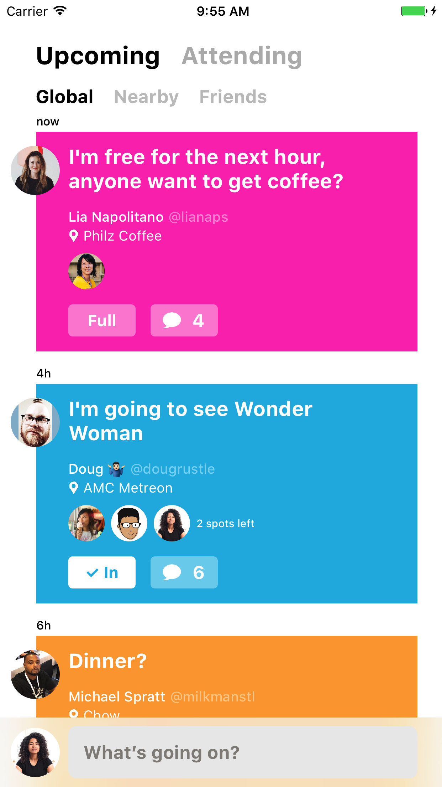

With Beacon it's easy to let your friends know when you're free to hang out.

We wanted an easy way to signal availability to our friends. When we want to go to the movies, grab a drink, or go hiking, we’ll usually text the first four or five people we can think of and attempt to coordinate in separate chat threads. It’s a pain in the ass and doesn’t reach everyone we know that might be interested in joining. Beacon provides the best way to create impromptu events and passively reach friends, friends of friends, or someone new.
Using Twitter allows us to take advantage of your existing social graph of friends. For many of us, Twitter represents our canonical identity on the Internet. That said, we recognize that Facebook or your phone contacts may better represent your social graph. We’re open to adding support for these identities. If this is something you're interested in, or holding you back from using Beacon, please contact us.
As you attend Beacon supported conferences like WWDC or Layers, we’ll automatically add you to a conference specific channel so that you only see events created by your fellow attendees. We've also included a special Friends channel by default so that you can create private events that only your friends from Twitter can join, people you follow that follow you back. You can toggle between different channels you belong to on the Attending tab, accessible in the main view of Beacon.
This isn't a question, but we’ll answer it! We're developers, and we’ve uninstalled our fair share of apps for sending too many push notifications. Help us send you only the push notifications you care about by toggling the granular controls on your profile page.